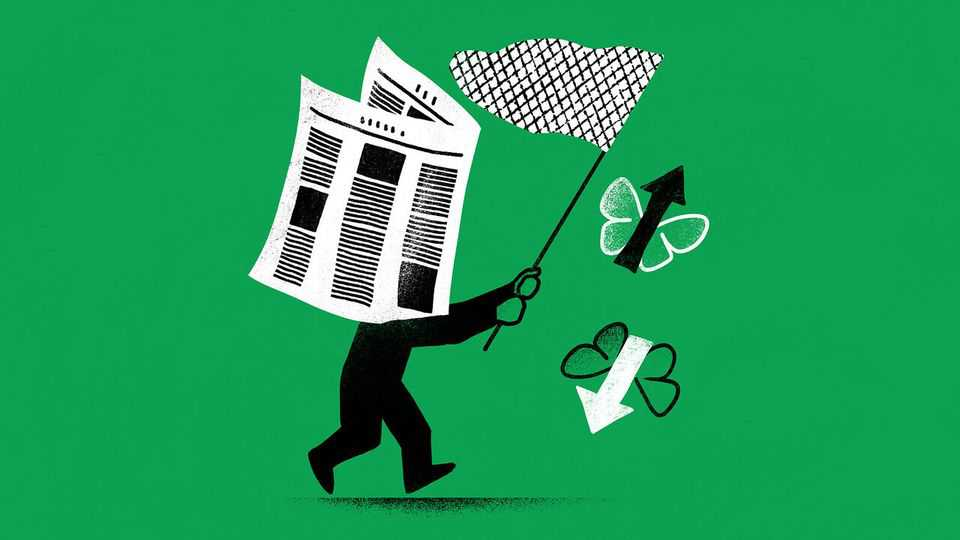

Why macro trading is hard
More difficult than knowing what to buy is how much
June 25th 2026

How much would you have paid ten years ago, as votes were counted for Britain’s Brexit referendum, to glimpse the next morning’s headlines and trade ahead of them? If you were betting on the pound, it would have helped a lot. The night of the poll £1 bought $1.50; a fortnight later, less than $1.30. But if you were trading stocks, a forewarning might have done more harm than good. Britain’s domestically focused FTSE 250 share index dropped at first, but only for two trading days. Then it began a bull market that lasted for a couple of years. Even the most fervent Brexiteer might not have predicted that.
Macro trading, meaning betting on how asset prices will move in response to political and economic trends, is enticing and glamorous. It is also hard, and a new study by Jerry Bell, Victor Haghani and James White of Elm Wealth, an investment firm, shows just how hard. They have designed a simulation in which both humans and leading artificial-intelligence models get access to the next day’s news in advance, and can place their bets before it breaks. In other words, they get to trade ahead of the rest of the market. Yet even with this advantage, it turns out to be difficult—for man and machine alike—to avoid ruin and turn a profit.
Mr Bell and his colleagues are updating an experiment they first ran in 2023. Then, they recruited 118 volunteers, most of whom were studying graduate-level finance at leading universities. Each was given $50 and a chance to grow it by placing bets on America’s S&P 500 share index and 30-year Treasury bonds.
They could do this once per asset per day, at the market close before each of 15 trading days, selected by the authors from between 2008 and 2022. Before trading, participants were shown the front page of the Wall Street Journal pertaining to the following day—so at Monday’s close they were shown Wednesday’s front page (with any actual price moves on Tuesday redacted). They could go long or short each asset and could leverage their bets by up to 50 times. This would translate a 2% price move, for example, to a double-or-nothing wager. Each trade was terminated at the following close.
Most participants did not make themselves proud. Roughly half lost money and one in six went bust; the average finishing pot was just $51.62, or a gain of 3.2%. Since then Elm has hosted a similar game on its website, with an imaginary starting stake of $1m. The 60,000-odd people who have played it have fared “substantially worse” than the original, paid cohort.
Perhaps the greater surprise is that, in the experiment’s latest iteration, several of the leading AI models did not truly excel, either. The Elm team gave each of ChatGPT, Claude, Gemini and Grok ten runs at the game, also starting with an imaginary $1m. They were told to play as a middle-aged American investor managing 100% of their financial wealth.
Only ChatGPT and Claude made money, with average finishing pots of $1.5m and $2.6m respectively. Grok’s was $970,000 and Gemini’s just $490,000. So what makes macro trading so hard, even for those with a crystal ball?
The biggest lesson is that both humans and AI are bad at sizing bets. The authors note that even ChatGPT and Claude were lucky as well as skilful in this respect. None of the models correctly predicted the direction of stocks and bonds more than about 60% of the time, yet their average leverage applied to their bets ranged between seven and 12 times. Given that American share prices moved by more than 5% on 23 days since 2000, and by more than 9% on seven days, the models were therefore running “too much risk of a catastrophic loss of capital”, including the possibility of a complete wipe-out.
The humans were even worse. In the original experiment, players in aggregate bet no more heavily when the news made price moves easy to predict. And like the AI models, they took too much risk overall. On 30% of days they used leverage above 20 times, which could easily have sent them bust.
Some humans, of course, are much better. The Elm team also invited five expert macro traders to play their original game. All five professionals finished in the black, with an average return of 130%. They did a bit better than AI at predicting directions (a hit rate of 63%). But, crucially, they varied their position sizes a lot, betting more when they felt confident and not at all when they did not. Even with excellent foresight, knowing which assets to buy is tough. Deciding how much, it seems, is tougher. ■
Subscribers to The Economist can sign up to our Opinion newsletter, which brings together the best of our leaders, columns, guest essays and reader correspondence.